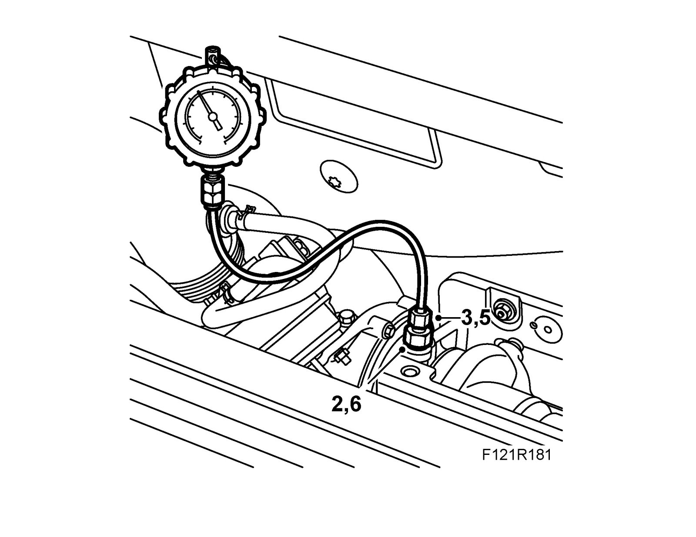

Engine Oil Pressure: Testing and Inspection
Check the engine oil pressure.Warning
The turbocharger can be hot and great care must be observed.
To remove
1. Remove the turbocharger heat shield.
2. Remove the banjo nipple in the turbocharger oil delivery pipe, collect any oil spill.

3. Fit 83 93 852 Pressure measuring equipment, fuel and oil with new sealing washers. Make sure the hose is not resting on sharp or hot components.
4. Start the engine and read off the pressure. See "Oil pressure" under Lubricating system. Turn off the engine.
5. Make sure the pressure gauge is showing 0 bar before detaching it from the adapter. Remove the pressure gauge and the adapter. Wipe away any spilled oil.
6. Fit the banjo nipple with new sealing washers. Grip the pipe so it does not turn.
Tightening torque 22 Nm (16 lbf ft).
7. Fit the turbocharger heat shield.